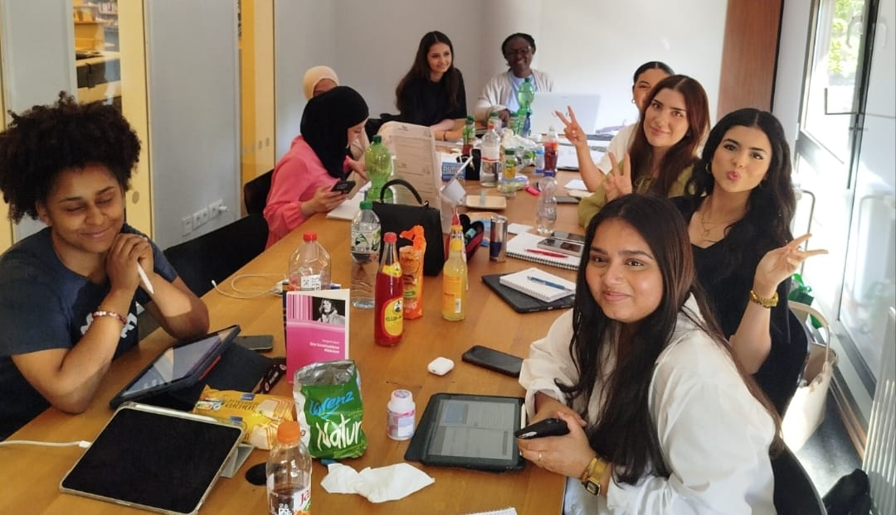

Aissa Halidou est une politologue nigérienne et experte en politique internationale, diplomatie, décolonisation et santé publique. Elle est active dans les milieux académiques, institutionnels et diplomatiques au niveau international.
Prof. Dr. Aissa Halidou propose un accompagnement de haut niveau aux gouvernements, institutions internationales, entreprises et ONG dans les domaines de la politique, de la diplomatie, de la décolonisation et de la santé publique.
Avec une présence en Allemagne et au Niger, elle offre une perspective bicontinentale unique, permettant de concevoir des stratégies adaptées aux réalités locales tout en répondant aux standards internationaux. Chaque mission est conçue sur mesure, avec un engagement total envers des résultats concrets et mesurables.
Aissa Halidou ist eine nigrische Politologin und Expertin für internationale Politik, Diplomatie, Dekolonisierung und öffentliche Gesundheit. Sie ist auf internationaler Ebene in akademischen, institutionellen und diplomatischen Kreisen tätig.
Prof. Dr. Aissa Halidou bietet hochrangige Begleitung für Regierungen, internationale Institutionen, Unternehmen und NGOs in den Bereichen Politik, Diplomatie, Dekolonisierung und öffentliche Gesundheit.
Mit Standorten in Deutschland und Niger bietet sie eine einzigartige bikontinentale Perspektive, die es ermöglicht, Strategien zu entwickeln, die an lokale Realitäten angepasst sind und gleichzeitig internationalen Standards entsprechen.
Aissa Halidou is a Nigerien political scientist and expert in international politics, diplomacy, decolonization and public health. She is active in academic, institutional and diplomatic circles at the international level.
Prof. Dr. Aissa Halidou provides high-level support to governments, international institutions, corporations and NGOs in the areas of politics, diplomacy, decolonization and public health.
With a presence in Germany and Niger, she offers a unique bi-continental perspective, enabling the design of strategies adapted to local realities while meeting international standards.
